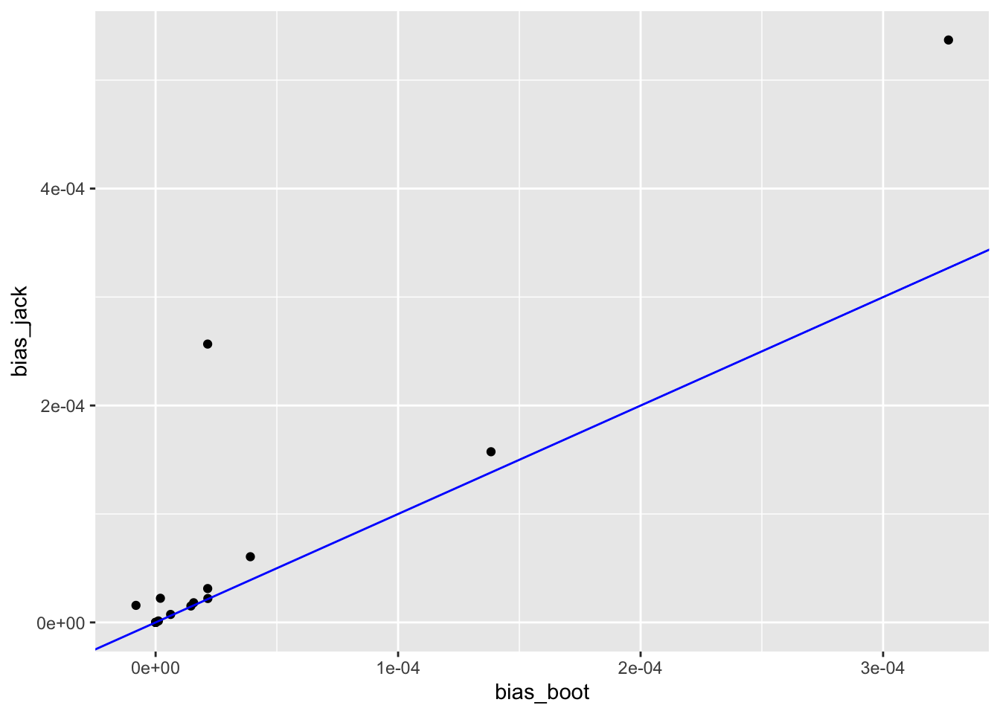
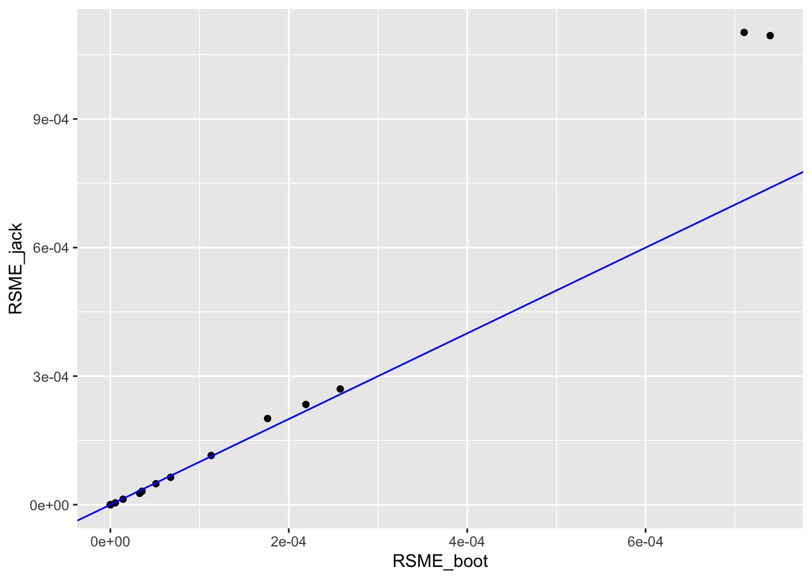
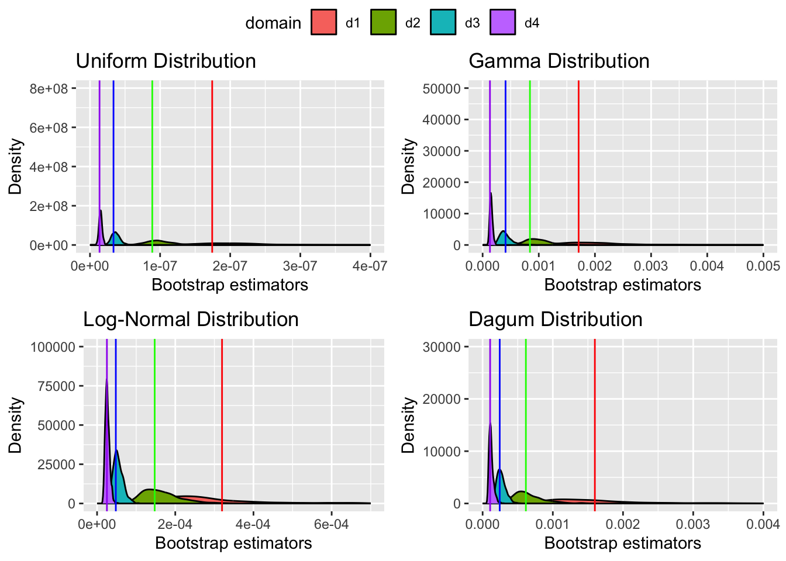
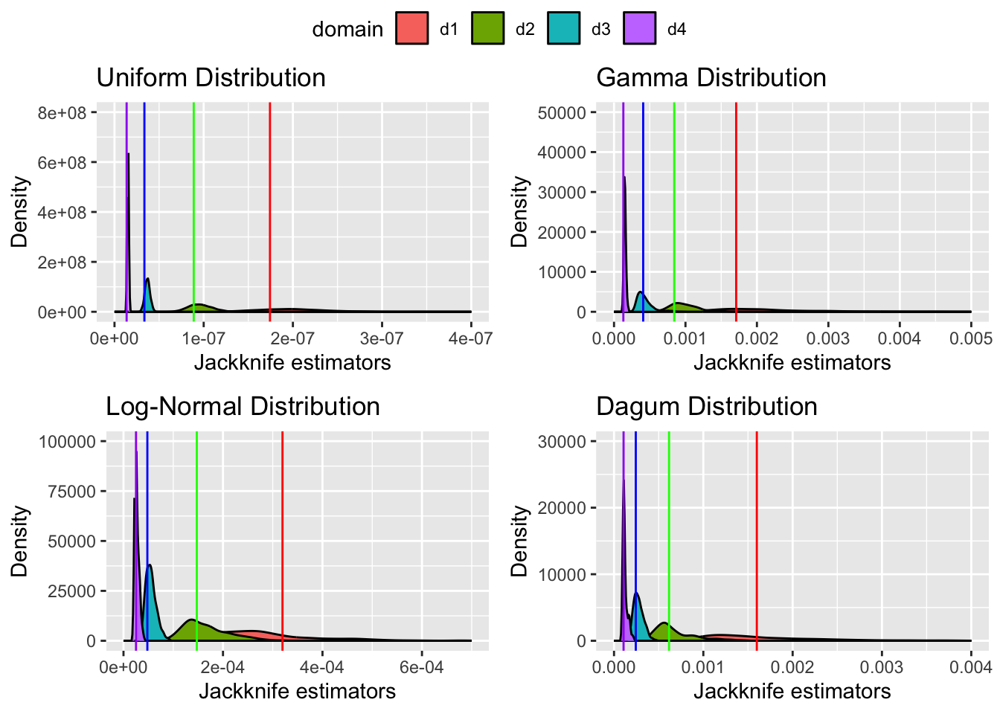
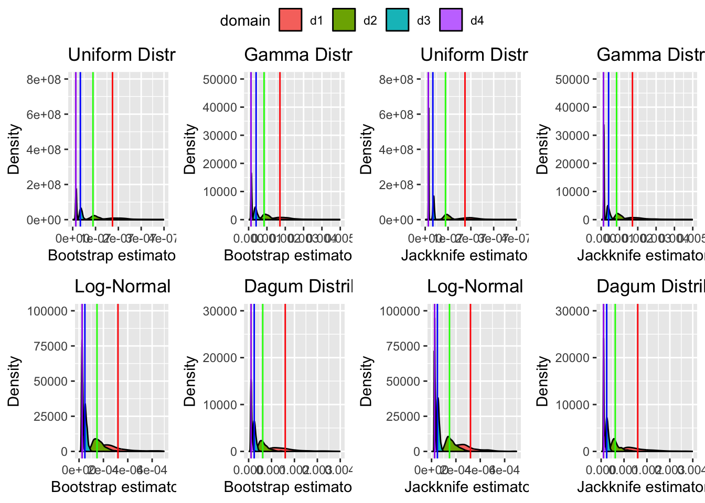
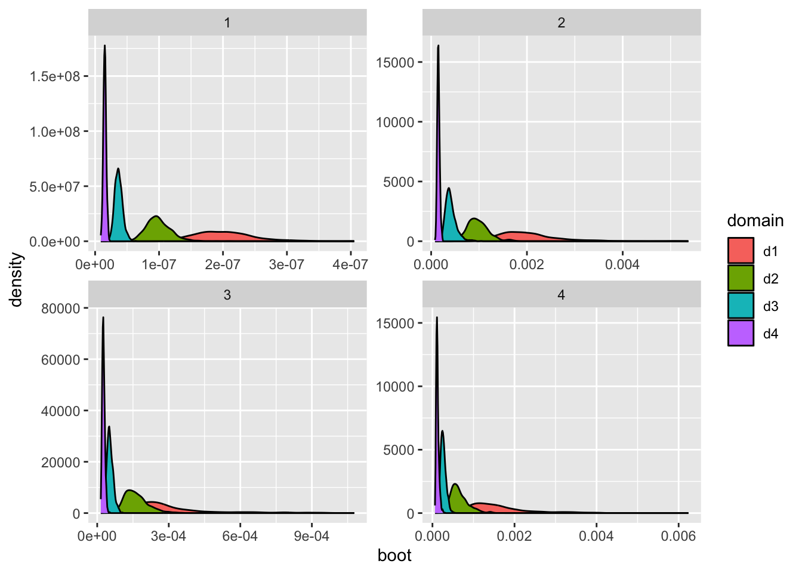
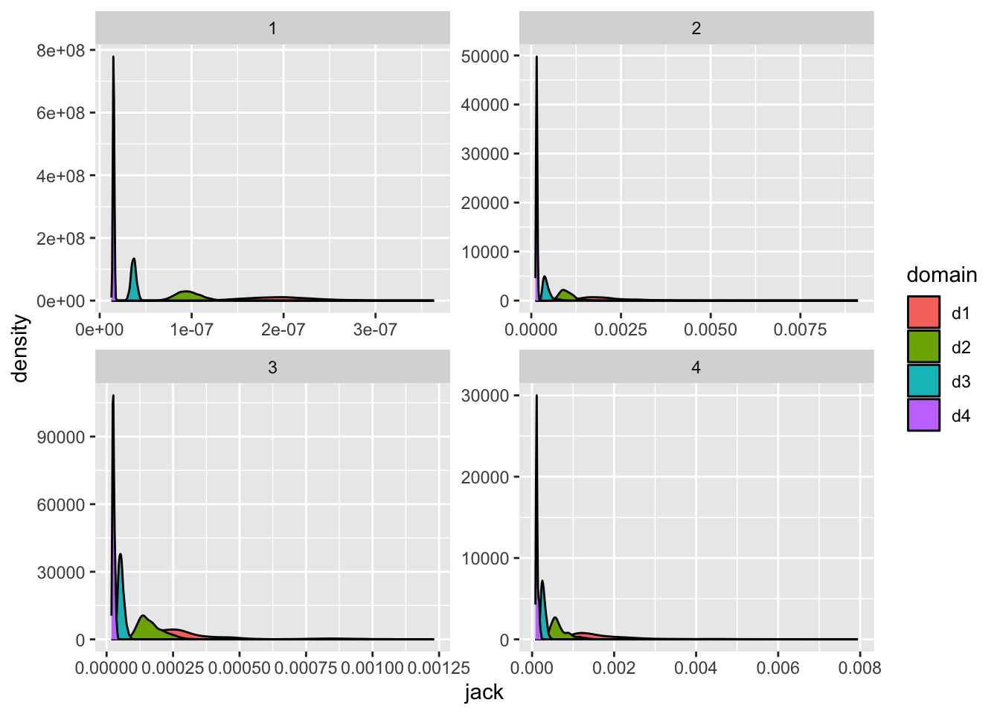
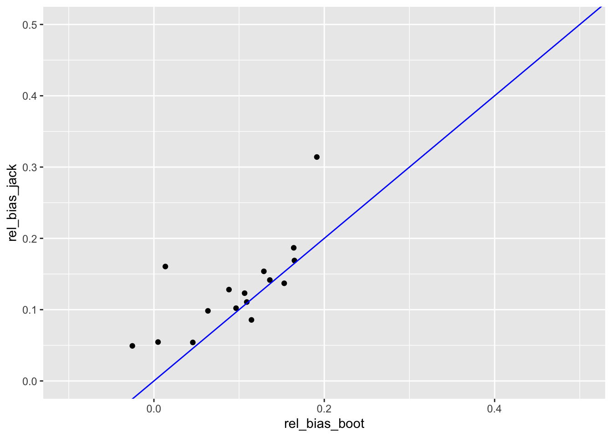
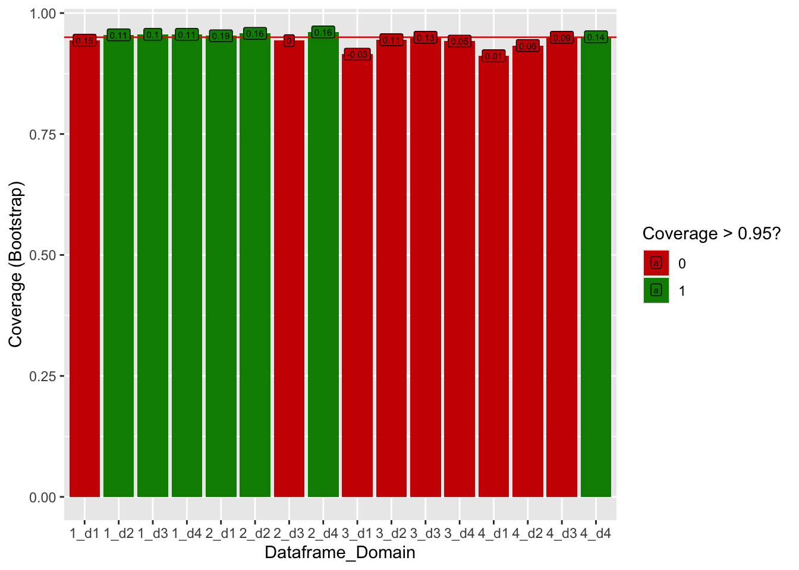
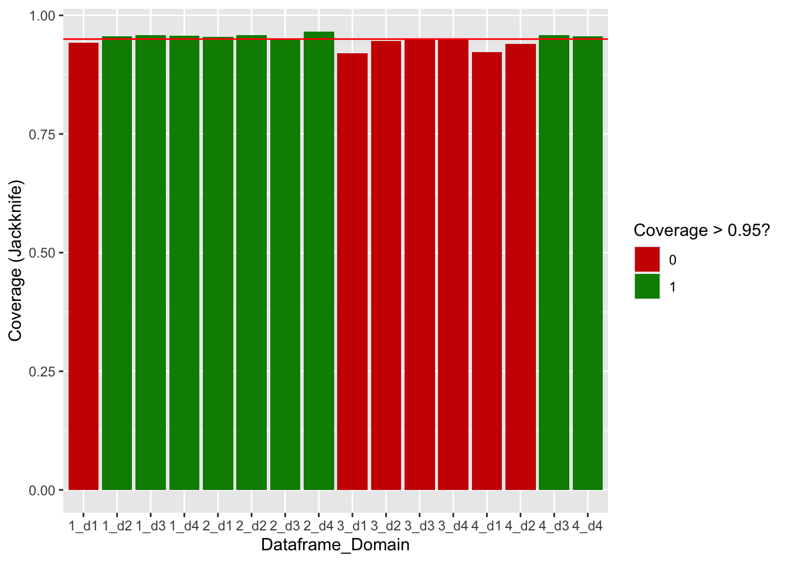

load("Workspace Simulation.RData")
library(tidyverse)
rm(d_j_domain, d_jack, d_var_jack, dat_d, dat_d_sampled, dat_pop, dat_var_df, g_mean, sample_d, tmp_df, tmp_df_d, var_boot, var_r,
A, base_seed, df, g_bar, g_d, g_jack, g_jack_mean, i, j, jack_d, k, l, m, n_d, name_df, name_df1, R, rows, var_mc_d, var_mc_ij)
dat_var_1$df <- 1
dat_var_2$df <- 2
dat_var_3$df <- 3
dat_var_4$df <- 4
dat_ges <- rbind(dat_var_1, dat_var_2, dat_var_3, dat_var_4)Analysis Ippisch
Preparations
First descriptive look
dat_fin$diff_bias <- dat_fin$bias_boot - dat_fin$bias_jack
dat_fin$diff_rsme <- dat_fin$RSME_boot - dat_fin$RSME_jack
dat_fin$rel_bias_boot <- dat_fin$bias_boot / dat_fin$var_mc
dat_fin$rel_bias_jack <- dat_fin$bias_jack / dat_fin$var_mc
summary(dat_fin) df domain var_mc bias_boot
Min. :1.00 Min. :1.00 Min. :1.360e-08 Min. :-8.095e-06
1st Qu.:1.75 1st Qu.:1.75 1st Qu.:1.894e-05 1st Qu.: 2.250e-08
Median :2.50 Median :2.50 Median :1.390e-04 Median : 1.037e-05
Mean :2.50 Mean :2.50 Mean :3.873e-04 Mean : 3.752e-05
3rd Qu.:3.25 3rd Qu.:3.25 3rd Qu.:4.602e-04 3rd Qu.: 2.149e-05
Max. :4.00 Max. :4.00 Max. :1.710e-03 Max. : 3.270e-04
bias_jack RSME_boot RSME_jack
Min. :1.500e-09 Min. :2.700e-09 Min. :1.700e-09
1st Qu.:1.027e-06 1st Qu.:4.165e-06 1st Qu.:3.339e-06
Median :1.693e-05 Median :4.327e-05 Median :4.020e-05
Mean :7.156e-05 Mean :1.514e-04 Mean :2.003e-04
3rd Qu.:3.857e-05 3rd Qu.:1.870e-04 3rd Qu.:2.094e-04
Max. :5.370e-04 Max. :7.397e-04 Max. :1.102e-03
diff_bias diff_rsme rel_bias_boot rel_bias_jack
Min. :-2.352e-04 Min. :-3.914e-04 Min. :-0.02533 Min. :0.04919
1st Qu.:-2.060e-05 1st Qu.:-1.294e-05 1st Qu.: 0.05898 1st Qu.:0.09514
Median :-1.819e-06 Median : 4.600e-09 Median : 0.10775 Median :0.12563
Mean :-3.403e-05 Mean :-4.887e-05 Mean : 0.09719 Mean :0.12927
3rd Qu.:-1.582e-07 3rd Qu.: 1.457e-06 3rd Qu.: 0.14032 3rd Qu.:0.15545
Max. : 2.780e-09 Max. : 6.216e-06 Max. : 0.19125 Max. :0.31410 Bias of bootstrap on average a little bit positive –> \(\hat{Var}_{boot}\) on average smaller than \(\hat{Var}_{MC}\) –> bootstrap seems to overestimate the variance on average a little bit Bias of Jackknife same, but a little bit bigger on average than bootstrap
dat_fin |>
ggplot(aes(x = bias_boot, y = bias_jack)) +
geom_point() +
geom_abline(slope = 1, intercept = 0, col = "blue")
Average RSME of bootstrap little bit smaller than Jackknife.
dat_fin |>
ggplot(aes(x = RSME_boot, y = RSME_jack)) +
geom_point() +
geom_abline(slope = 1, intercept = 0, col = "blue")
Densities of bootstrap variance estimators
p_b_1 <- dat_ges |>
filter(df == 1) |>
ggplot(aes(boot, fill = domain)) +
geom_density() +
geom_vline(xintercept = dat_fin[1, "var_mc"], col = "red") +
geom_vline(xintercept = dat_fin[2, "var_mc"], col = "green") +
geom_vline(xintercept = dat_fin[3, "var_mc"], col = "blue") +
geom_vline(xintercept = dat_fin[4, "var_mc"], col = "purple") +
labs(title = "Uniform Distribution",
x = "Bootstrap estimators",
y = "Density") +
xlim(0, 0.0000004) +
ylim(0, 800000000)
p_b_2 <- dat_ges |>
filter(df == 2) |>
ggplot(aes(boot, fill = domain)) +
geom_density() +
geom_vline(xintercept = dat_fin[5, "var_mc"], col = "red") +
geom_vline(xintercept = dat_fin[6, "var_mc"], col = "green") +
geom_vline(xintercept = dat_fin[7, "var_mc"], col = "blue") +
geom_vline(xintercept = dat_fin[8, "var_mc"], col = "purple") +
labs(title = "Gamma Distribution",
x = "Bootstrap estimators",
y = "Density") +
xlim(0, 0.005) +
ylim(0, 50000)
p_b_3 <- dat_ges |>
filter(df == 3) |>
ggplot(aes(boot, fill = domain)) +
geom_density() +
geom_vline(xintercept = dat_fin[9, "var_mc"], col = "red") +
geom_vline(xintercept = dat_fin[10, "var_mc"], col = "green") +
geom_vline(xintercept = dat_fin[11, "var_mc"], col = "blue") +
geom_vline(xintercept = dat_fin[12, "var_mc"], col = "purple") +
labs(title = "Log-Normal Distribution",
x = "Bootstrap estimators",
y = "Density") +
xlim(0, 0.0007) +
ylim(0, 100000)
p_b_4 <- dat_ges |>
filter(df == 4) |>
ggplot(aes(boot, fill = domain)) +
geom_density() +
geom_vline(xintercept = dat_fin[13, "var_mc"], col = "red") +
geom_vline(xintercept = dat_fin[14, "var_mc"], col = "green") +
geom_vline(xintercept = dat_fin[15, "var_mc"], col = "blue") +
geom_vline(xintercept = dat_fin[16, "var_mc"], col = "purple") +
labs(title = "Dagum Distribution",
x = "Bootstrap estimators",
y = "Density") +
xlim(0, 0.004) +
ylim(0, 30000)
ggpubr::ggarrange(p_b_1, p_b_2, p_b_3, p_b_4, nrow = 2, ncol = 2, common.legend = TRUE)
Densities of jackknife variance estimators
p_j_1 <- dat_ges |>
filter(df == 1) |>
ggplot(aes(jack, fill = domain)) +
geom_density() +
geom_vline(xintercept = dat_fin[1, "var_mc"], col = "red") +
geom_vline(xintercept = dat_fin[2, "var_mc"], col = "green") +
geom_vline(xintercept = dat_fin[3, "var_mc"], col = "blue") +
geom_vline(xintercept = dat_fin[4, "var_mc"], col = "purple") +
labs(title = "Uniform Distribution",
x = "Jackknife estimators",
y = "Density") +
xlim(0, 0.0000004) +
ylim(0, 800000000)
p_j_2 <- dat_ges |>
filter(df == 2) |>
ggplot(aes(jack, fill = domain)) +
geom_density() +
geom_vline(xintercept = dat_fin[5, "var_mc"], col = "red") +
geom_vline(xintercept = dat_fin[6, "var_mc"], col = "green") +
geom_vline(xintercept = dat_fin[7, "var_mc"], col = "blue") +
geom_vline(xintercept = dat_fin[8, "var_mc"], col = "purple") +
labs(title = "Gamma Distribution",
x = "Jackknife estimators",
y = "Density") +
xlim(0, 0.005) +
ylim(0, 50000)
p_j_3 <- dat_ges |>
filter(df == 3) |>
ggplot(aes(jack, fill = domain)) +
geom_density() +
geom_vline(xintercept = dat_fin[9, "var_mc"], col = "red") +
geom_vline(xintercept = dat_fin[10, "var_mc"], col = "green") +
geom_vline(xintercept = dat_fin[11, "var_mc"], col = "blue") +
geom_vline(xintercept = dat_fin[12, "var_mc"], col = "purple") +
labs(title = "Log-Normal Distribution",
x = "Jackknife estimators",
y = "Density") +
xlim(0, 0.0007) +
ylim(0, 100000)
p_j_4 <- dat_ges |>
filter(df == 4) |>
ggplot(aes(jack, fill = domain)) +
geom_density() +
geom_vline(xintercept = dat_fin[13, "var_mc"], col = "red") +
geom_vline(xintercept = dat_fin[14, "var_mc"], col = "green") +
geom_vline(xintercept = dat_fin[15, "var_mc"], col = "blue") +
geom_vline(xintercept = dat_fin[16, "var_mc"], col = "purple") +
labs(title = "Dagum Distribution",
x = "Jackknife estimators",
y = "Density") +
xlim(0, 0.004) +
ylim(0, 30000)
ggpubr::ggarrange(p_j_1, p_j_2, p_j_3, p_j_4, nrow = 2, ncol = 2, common.legend = TRUE)
ggpubr::ggarrange(p_b_1, p_b_2, p_j_1, p_j_2, p_b_3, p_b_4, p_j_3, p_j_4, nrow = 2, ncol = 4, common.legend = TRUE)
Bias of bootstrap and jackknife over dataframes per domain
dat_ges |>
ggplot(aes(boot, fill = domain)) +
geom_density() +
facet_wrap( ~ df, scales = "free")
dat_ges |>
ggplot(aes(jack, fill = domain)) +
geom_density() +
facet_wrap( ~ df, scales = "free")
plot_boot_all <- dat_ges |>
ggplot(aes(boot, fill = domain)) +
geom_density() +
facet_wrap( ~ df, scales = "free") +
labs(x = "Bootstrap variance estimator",
y = "Density",
fill = "Domain")
plot_jack_all <- dat_ges |>
ggplot(aes(jack, fill = domain)) +
geom_density() +
facet_wrap( ~ df, scales = "free")+
labs(x = "Jackknife variance estimator",
y = "",
fill = "Domain")
ggpubr::ggarrange(plot_boot_all, plot_jack_all, nrow = 1, ncol = 2, common.legend = TRUE)
Relative Bias
Relative Bias of jackknife in mean and median higher, also higher max value.
dat_fin |>
arrange(rel_bias_boot, descending = TRUE) |>
tail(n = 5) |>
select(df, domain, var_mc, bias_boot, RSME_boot, rel_bias_boot) df domain var_mc bias_boot RSME_boot rel_bias_boot
12 4 4 1.069234e-04 1.455226e-05 3.547799e-05 0.1360999
13 1 1 1.743052e-07 2.666388e-08 5.285161e-08 0.1529724
14 2 2 8.426659e-04 1.383136e-04 2.577008e-04 0.1641381
15 2 4 1.305629e-04 2.153981e-05 3.287317e-05 0.1649765
16 2 1 1.709613e-03 3.269639e-04 7.104912e-04 0.1912502Bootstrap: Highest relative bias for domain 1 of df2, followed by d4 of df2 and d2 of df2. Interestingly, the fourth-highest relative bias is visible for d1 of df1 (uniform distribution).
dat_fin |>
arrange(rel_bias_jack, descending = FALSE) |>
tail(n = 5) |>
select(df, domain, var_mc, bias_jack, RSME_jack, rel_bias_jack) df domain var_mc bias_jack RSME_jack rel_bias_jack
12 3 3 4.795342e-05 7.373149e-06 1.290532e-05 0.1537565
13 4 1 1.598848e-03 2.566330e-04 1.094454e-03 0.1605112
14 2 4 1.305629e-04 2.205609e-05 2.665713e-05 0.1689308
15 2 2 8.426659e-04 1.573636e-04 2.700261e-04 0.1867449
16 2 1 1.709613e-03 5.369829e-04 1.101895e-03 0.3140961Highest relative bias for d1 in df2, followed by d2 in df2 and d4 in df2 (same domains and df as highest bias for bootstrap).
For uniform distribution, the relative bias of bootstrap is higher for the two small domains and lower for the two big domains. For the gamma distribution, the relative bias of bootstrapping is lower for all domains. The same is true for df3 (log-normal) and the dagum distribution. Thus, the only domain-df-combinations for which the absolute relative bias of jackknife is smaller than of bootstrap is for the small domains (d1 and d2) of the uniform distribution - for all other combinations, bootstrapping has a smaller absolute relative bias.
dat_fin |>
ggplot(aes(x = rel_bias_boot, y = rel_bias_jack)) +
geom_point() +
geom_abline(intercept = 0, slope = 1, col = "blue") +
ylim(0, 0.5) +
xlim(-0.1, 0.5)
Difference in mean
Tests across all dataframes and domains
t.test(dat_fin$bias_boot, dat_fin$bias_jack, alternative = "two.sided")
Welch Two Sample t-test
data: dat_fin$bias_boot and dat_fin$bias_jack
t = -0.82292, df = 24.406, p-value = 0.4185
alternative hypothesis: true difference in means is not equal to 0
95 percent confidence interval:
-1.193199e-04 5.125032e-05
sample estimates:
mean of x mean of y
3.752157e-05 7.155635e-05 t.test(dat_fin$rel_bias_boot, dat_fin$rel_bias_jack, alternative = "two.sided")
Welch Two Sample t-test
data: dat_fin$rel_bias_boot and dat_fin$rel_bias_jack
t = -1.4287, df = 29.968, p-value = 0.1634
alternative hypothesis: true difference in means is not equal to 0
95 percent confidence interval:
-0.07793593 0.01377797
sample estimates:
mean of x mean of y
0.09719342 0.12927239 t.test(dat_fin$RSME_boot, dat_fin$RSME_jack, alternative = "two.sided")
Welch Two Sample t-test
data: dat_fin$RSME_boot and dat_fin$RSME_jack
t = -0.45147, df = 25.978, p-value = 0.6554
alternative hypothesis: true difference in means is not equal to 0
95 percent confidence interval:
-0.0002714101 0.0001736608
sample estimates:
mean of x mean of y
0.0001514330 0.0002003076 Across all domains and dataframes, no significant difference between bootstrap and Jackknife, neither for bias nor for RSME.
Analysis per df
dat_fin |>
group_by(df) |>
summarise(mean_bias_boot = mean(bias_boot),
mean_bias_jack = mean(bias_jack),
mean_RSME_boot = mean(RSME_boot),
mean_RSME_jack = mean(RSME_jack))# A tibble: 4 × 5
df mean_bias_boot mean_bias_jack mean_RSME_boot mean_RSME_jack
<int> <dbl> <dbl> <dbl> <dbl>
1 1 0.0000000104 0.00000000910 0.0000000211 0.0000000165
2 2 0.000122 0.000185 0.000279 0.000378
3 3 0.00000373 0.0000107 0.0000617 0.0000669
4 4 0.0000241 0.0000909 0.000265 0.000356 Bootstrap: Bias biggest for df2 (Gamma) and smallest for df1 (uniform) and positive for all dataframes. RSME is for df4 (Dagum) biggest and for uniform smallest again.
Jackknife: Bias for Gamma biggest and for uniform smallest and positive for all dataframes (same as bootstrap). RSME For Gamma the biggest and for uniform smallest (bootstrap has biggest RSME for df4).
Analysis per domain
dat_fin |>
group_by(domain) |>
summarise(mean_bias_boot = mean(bias_boot),
mean_bias_jack = mean(bias_jack),
mean_RSME_boot = mean(RSME_boot),
mean_RSME_jack = mean(RSME_jack))# A tibble: 4 × 5
domain mean_bias_boot mean_bias_jack mean_RSME_boot mean_RSME_jack
<dbl> <dbl> <dbl> <dbl> <dbl>
1 1 0.0000851 0.000202 0.000407 0.000599
2 2 0.0000483 0.0000590 0.000132 0.000138
3 3 0.00000741 0.0000152 0.0000487 0.0000480
4 4 0.00000931 0.00000964 0.0000185 0.0000156Bootstrap: Bias decreases for increasing sample size but d3 has lower bias than d4, all biases positive again. RSME also decreases for increasing sample size.
Jackknife: Bias overall decreases with increasing sample size but d3 has smaller bias than d4. For RSME the same.
Analysis per df and domain
Bootstrap
Bias of bootstrap everywhere positive except of df3 d1. All domains (4 < 3 < 2 < 1) of df1 have the smallest bias, d1 of df2 has the biggest (followed by d2 of df2 and d2 of df4). RSME is smallest again for df1 as above. Highest RSME for d1 of df4 and df2.
Jackknife
Bias everywhere positive. Again, all domains of df1 have the smallest bias. d1 of df2 and df4 have the biggest bias. RSME smallest for d1 and biggest for d1 of df2 and df4 again.
Difference of Jackknife and Bootstrap
bias_boot - bias_jack and RSME_boot - RSME_jack
The Bias of Jackknife is for all df and domains bigger than the one of Bootstrap except d1 and d2 of df1. The biggest differences are visible for d1 of df2 and df4 (where the absolute bias is also higher), the smallest differences are visible for d1.
For RSME, the picture is more differentiated: RSME of Jackknife tends to be bigger for the small domains. RSME of Bootstrap tends to be bigger for the domains with larger sample size, even though the absolute difference decreases with increasing domain size.
Coverage
dat_ges$lower_boot <- dat_ges$gini - 1.96 * sqrt(dat_ges$boot)
dat_ges$upper_boot <- dat_ges$gini + 1.96 * sqrt(dat_ges$boot)
dat_ges$lower_jack <- dat_ges$gini - 1.96 * sqrt(dat_ges$jack)
dat_ges$upper_jack <- dat_ges$gini + 1.96 * sqrt(dat_ges$jack)
df <- 4
d <- 4
dat_gini_gt <- data.frame(df = numeric(0), d = character(0), gini = numeric(0))
row = 1
for (i in 1:df) {
tmp_df <- dat_inc[, c(i, 5)]
for (j in 1:d) {
tmp_d <- tmp_df |>
filter(domain == paste0("d", j))
gini <- ineq::Gini(tmp_d[, 1])
dat_gini_gt[row, "df"] <- i
dat_gini_gt[row, "d"] <- j
dat_gini_gt[row, "gini"] <- gini
for (k in 1:nrow(dat_ges)) {
if(dat_ges$df[k] == i & dat_ges$domain[k] == paste0("d", j)){
dat_ges$cov_boot[k] <- ifelse(dat_ges$lower_boot[k] < gini & dat_ges$upper_boot[k] > gini, 1, 0)
dat_ges$cov_jack[k] <- ifelse(dat_ges$lower_jack[k] < gini & dat_ges$upper_jack[k] > gini, 1, 0)
}
}
row = row + 1
}
}
dat_cov <- dat_ges |>
group_by(df, domain) |>
summarise(cov_boot = mean(cov_boot),
cov_jack = mean(cov_jack))`summarise()` has grouped output by 'df'. You can override using the `.groups`
argument.dat_fin <- cbind(dat_fin, dat_cov[, 3:4])
dat_cov# A tibble: 16 × 4
# Groups: df [4]
df domain cov_boot cov_jack
<dbl> <chr> <dbl> <dbl>
1 1 d1 0.944 0.942
2 1 d2 0.955 0.956
3 1 d3 0.956 0.958
4 1 d4 0.956 0.957
5 2 d1 0.953 0.955
6 2 d2 0.958 0.958
7 2 d3 0.943 0.951
8 2 d4 0.961 0.966
9 3 d1 0.915 0.92
10 3 d2 0.945 0.946
11 3 d3 0.95 0.949
12 3 d4 0.942 0.949
13 4 d1 0.912 0.923
14 4 d2 0.933 0.94
15 4 d3 0.95 0.958
16 4 d4 0.951 0.956dat_fin$dfd <- paste0(dat_cov$df, "_", dat_cov$domain)
dat_fin$cov95_boot <- ifelse(dat_fin$cov_boot > 0.95, 1, 0)
dat_fin$cov95_jack <- ifelse(dat_fin$cov_jack > 0.95, 1, 0)
dat_fin |>
ggplot(aes(x = dfd, y = cov_boot, fill = as.factor(cov95_boot))) +
geom_col() +
geom_abline(slope = 0, intercept = 0.95, col = "red") +
geom_label(aes(label = round(rel_bias_boot, 2)), size = 2) +
labs(fill = "Coverage > 0.95?",
x = "Dataframe_Domain",
y = "Coverage (Bootstrap)") +
scale_fill_discrete(palette = c("red3", "green4"))
dat_cov_long <- dat_cov |>
pivot_longer(cols = c(cov_boot, cov_jack),
names_to = "type",
values_to = "cov")
dat_cov_long$dfd <- paste0(dat_cov_long$df, "_", dat_cov_long$domain)
dat_cov_long$cov95 <- ifelse(dat_cov_long$cov > 0.95, 1, 0)dat_cov_long |>
filter(type == "cov_jack") |>
ggplot(aes(x = dfd, y = cov, fill = as.factor(cov95))) +
geom_col() +
geom_abline(slope = 0, intercept = 0.95, col = "red") +
labs(fill = "Coverage > 0.95?",
x = "Dataframe_Domain",
y = "Coverage (Jackknife)") +
scale_fill_discrete(palette = c("red3", "green4"))
dat_cov$boot_95 <- ifelse(dat_cov$cov_boot > 0.95, 1, 0)
dat_cov$jack_95 <- ifelse(dat_cov$cov_jack > 0.95, 1, 0)
dat_cov |>
ungroup() |>
summarise(ratio_cov_boot = mean(boot_95),
ratio_cov_jack = mean(jack_95))# A tibble: 1 × 2
ratio_cov_boot ratio_cov_jack
<dbl> <dbl>
1 0.438 0.562Analysis of Gini
dat_ges |>
ggplot(aes(gini, fill = domain)) +
geom_density(alpha = 0.4) +
facet_wrap( ~ df, scales = "free") +
labs(x = "Gini estimator per dataframe and domain",
y = "Density",
fill = "Domain")
gini_1 <- dat_var_1 |>
filter(domain == "d1") |>
ggplot(aes(x = R, y = gini)) +
geom_line() +
geom_abline(slope = 0, intercept = ineq::Gini(dat_inc$uniform[dat_inc$domain == "d1"]), col = "blue") +
labs(y = paste("Gini; Range:", round(max(dat_var_1$gini) - min(dat_var_1$gini), 2)),
x = "MC-Iteration",
title = "Uniform")
gini_2 <- dat_var_2 |>
filter(domain == "d1") |>
ggplot(aes(x = R, y = gini)) +
geom_line() +
geom_abline(slope = 0, intercept = ineq::Gini(dat_inc$gamma[dat_inc$domain == "d1"]), col = "blue") +
labs(y = paste("Gini; Range:", round(max(dat_var_2$gini) - min(dat_var_2$gini), 2)),
x = "MC-Iteration",
title = "Gamma")
gini_3 <- dat_var_3 |>
filter(domain == "d1") |>
ggplot(aes(x = R, y = gini)) +
geom_line() +
geom_abline(slope = 0, intercept = ineq::Gini(dat_inc$lognormal[dat_inc$domain == "d1"]), col = "blue") +
labs(y = paste("Gini; Range:", round(max(dat_var_3$gini) - min(dat_var_3$gini), 2)),
x = "MC-Iteration",
title = "Log-Normal")
gini_4 <- dat_var_4 |>
filter(domain == "d1") |>
ggplot(aes(x = R, y = gini)) +
geom_line() +
geom_abline(slope = 0, intercept = ineq::Gini(dat_inc$dagum[dat_inc$domain == "d1"]), col = "blue") +
labs(y = paste("Gini; Range:", round(max(dat_var_4$gini) - min(dat_var_4$gini), 2)),
x = "MC-Iteration",
title = "Dagum")
ggpubr::ggarrange(gini_1, gini_2, gini_3, gini_4, nrow = 2, ncol = 2)
Even tough the mean Gini is higher for the Gamma distribution, the absolute range (max - min) is bigger for the Dagum distribution (all graphs just for d1).